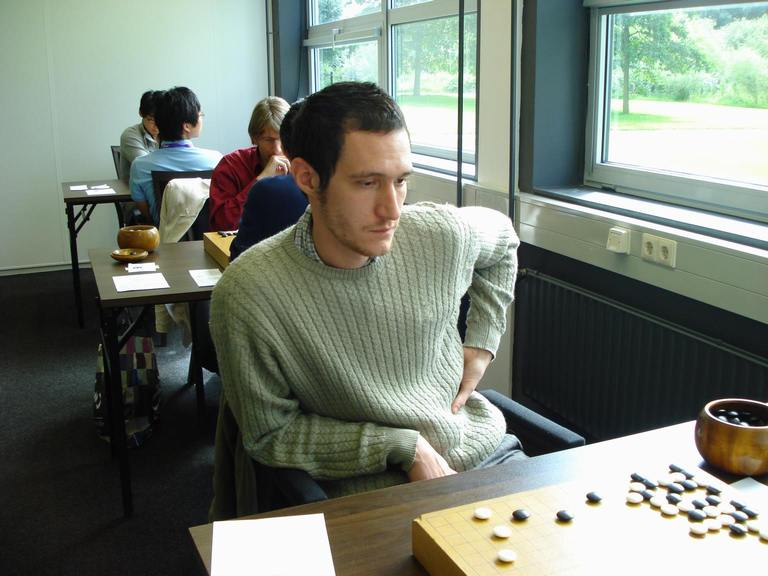
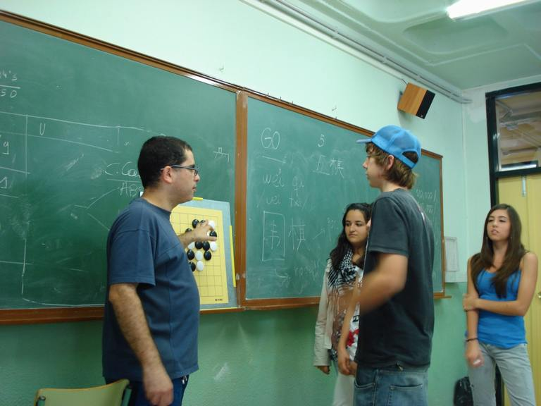
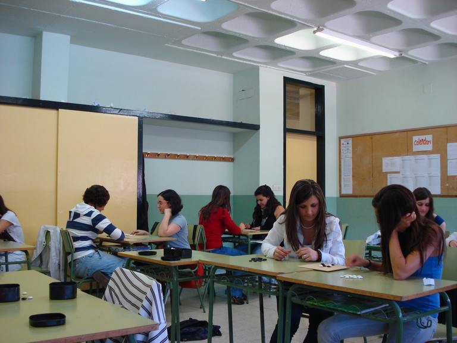
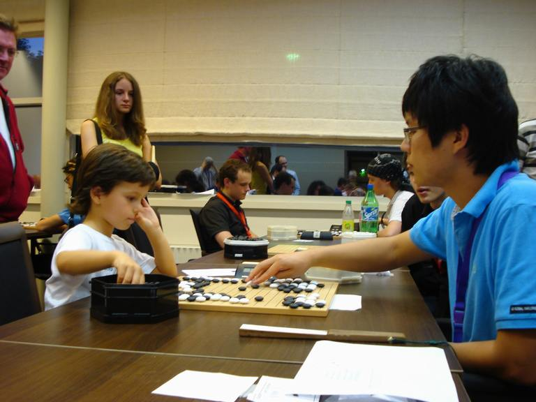

致欧洲那些让我感动的瞬间以及让我感动的人
#1 致欧洲那些让我感动的瞬间以及让我感动的人 作者：孤竹 发表时间：2010-3-9 13:52:58
来到欧洲一年半，虽说是以上学为主，但让我感触最多的还是来自于围棋。曾经写过这里下棋的氛围与国内不同，多了不少娱乐性，可是真正让我感动的却是那些为了这门艺术无私付出的人们。这次我想通过挑选出来的一些图片，给大家讲讲在地球另一端发生着的围棋故事。
和他们相比，我们懂得的很多，而我们的热爱却太少。
第一张图片致荷兰好友Judith以及Harry夫妇。Harry在7年前一手创办了eurogotv，这是个完全凭借热情却工作量巨大的事业。eurogotv负责欧洲的日常围棋报道以及大赛转播，这也意味着他们必须辗转在欧洲各个国家之间，而主办者能够负担的只是路费和住宿。试想在和正常人一样工作养家的同时，还要投入大量财力物力以及精力在eurogotv上，如果不是对围棋真的十分热爱又怎么可能做到呢？
Judith(此时他们正在罗马尼亚直播青少年围棋赛吧)
Harry(左)，李月(右)。李月现在在西班牙马德里上学，在欧洲各地有不少学生，也对围棋的普及作出了不少贡献。
#2 Re:致欧洲那些让我感动的瞬间以及让我感动的人 作者：孤竹 发表时间：2010-3-9 13:57:23
下面这张图片致来自匈牙利的Mero Csaba6段。其实我私下和Csaba并不熟，也没有在正式比赛中交过手。但是黎婷对我说过的一番话，让我对他平添了几分敬佩以及感动。
Csaba刚过而立之年，曾经辞去工作来到日本学棋，回到欧洲之后也选择以教棋为生。知道他的现状之后我一度很惋惜，毕竟在欧洲教棋只能解决温饱，而以他的棋力要通过赚取奖金为生也不是那么容易。但黎婷告诉我Csaba是这样能够告诉她的，首先以教棋解决生计可以普及围棋，再者只要能一直下上棋他就觉得很满足了。这样的心态，恐怕是许多人连想象都很困难的吧。
Mero Csaba6段，将代表欧洲出战本届春兰杯。




投入比赛的欧洲小朋友，下棋真有范儿！(对手可是韩国业余冠军金俊相啊！)
［此帖子已被 孤竹 在 2010-3-9 13:58:33 编辑过］
［此帖子已被 孤竹 在 2010-3-9 14:00:30 编辑过］